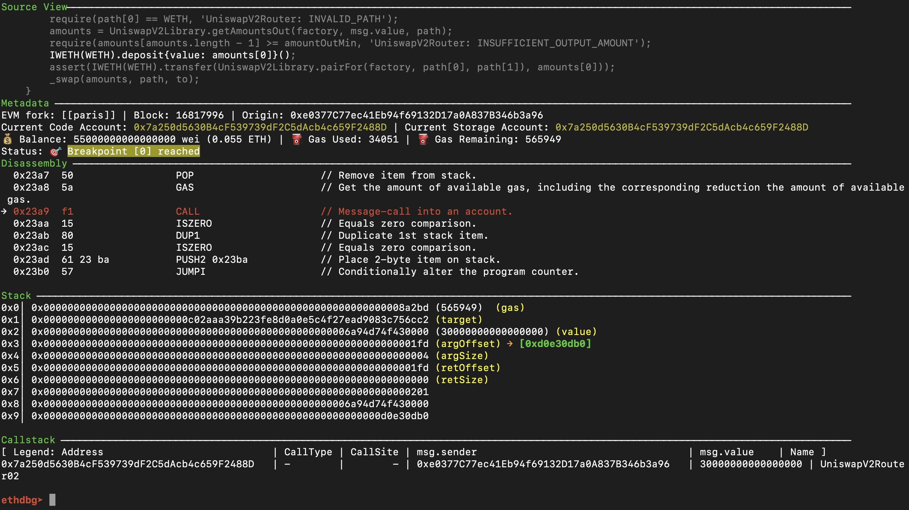

context
Print the current context of the EVM.
Syntax: context

The context is divided into different views that provide different kinds of information during debugging.
The layout of the context view is fully configurable via the context_layout configuration option.
The default layout is 'source,metadata,status,disass,stack,callstack'.
It can either be set globally in the ethpwn configuration file in ~/.config/ethpwn/config.json or on a per-debugging session basis via the ethdbg CLI.
# set a minimal context layout for the current debugging session
ethdbg➤ context_layout 'disass,stack,callstack'
// set a minimal context layout for all debugging sessions in the config.json
{
...
"dbg": {
"context_layout": "disass,stack,callstack"
...
}
}
üëÄ Source View
This view is displayed when the account currently executing has source code available in the contract_registry() or the executing contract
has verified source code available on Etherscan.
To provide source code, a user can either verify their contract source on Etherscan and provide the Etherscan API key in the configuration, or register it in ethpwn's contract registry.
# register a contract in the registry using the ethpwn CLI
$ ethpwn contract register 0x1234... MyContractName MyContract.sol
# register a contract in the registry using the ethpwn python API
>>> from ethpwn import *
>>> CONTRACT_METADATA.compile_solidity_files(['MyContract.sol'])
>>> CONTRACT_METADATA['MyContractName'].get_contract_at('0x1234...')
This view highlights the currently executing source code line corresponding to the EVM opcodes displayed in the Disassembly view.
Due to the debug information produced by the Solidity and Vyper compilers, this view can become quite large for large contracts.
To avoid this, a user can either specify a maximum number of lines to display via the source_view_cutoff option, or by disabling the view entirely by removing it from the context_layout.
These settings can be set globally in the ethpwn configuration file in ~/.config/ethpwn/config.json or on a per-debugging session basis via the ethdbg CLI.
üëÄ Metadata View
The Metadata view displays useful information regarding the currently executing transaction.
| Field | What |
|---|---|
Fork |
Version of the EVM currently executing |
Block |
Block number at which the current transaction is executing |
Origin |
The account that started the transaction |
Current code account |
The address of the smart contract currently executing code |
Current storage account |
The address of the smart contract whose storage will be referenced during an SSTORE/SLOAD |
Balance |
The balance of the Current code account |
Gas Used |
The amount of gas used up until the current opcode |
Gas Remaining |
How much gas is remaining for this transaction execution |
üëÄ Disassembly View
Here we display the currently executing opcode, a small history of opcodes executed up to this point, and a short look-ahead of the following opcodes.
(You can see the full history by using the command log_op).
üëÄ Stack View
A view of the currently active EVM stack.
üëÄ Callstack View
The Callstack View provides insight regarding the nested calls that are performed by a transactions to different contracts during execution (i.e., internal transactions created by these opcodes: CALL, DELEGATECALL, STATICCALL, CODECALL, CREATE, CREATE2).
This view provides the following information:
| Field | What |
|---|---|
Address |
The current code address executing (the target of the last-issued CALL/...) |
Call Type |
Type of call, CALL, DELEGATECALL, STATICCALL, CODECALL, CREATE, CREATE2 |
Call Site |
The program counter value in the caller contract when the last-call was issued |
msg.sender |
The value of the msg.sender in this call-context |
msg.value |
The amount of ETH sent by the caller for this call-context |
Name |
If the contract is in the registry, we display its name here. |